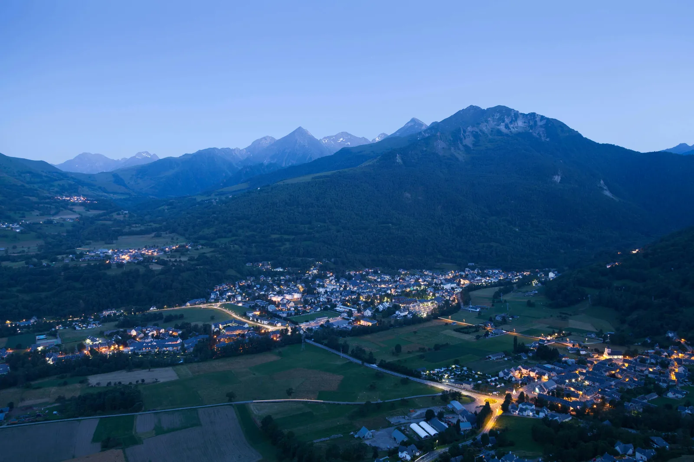

Un village au cœur des Grands Sites
L’office de tourisme présente Luz-Saint-Sauveur comme un village authentique au cœur des Grands Sites et des paysages d’exception pyrénéens.
Luz-Saint-Sauveur n’est pas une simple commune de passage entre stations. C’est une base de vallée : thermalisme, commerces, Luz Ardiden, accès Barèges, Gavarnie-Gèdre, Pont Napoléon, vélo, randonnée et séjours bien-être. Pour un propriétaire, l’enjeu n’est pas seulement d’être visible sur Airbnb ou Booking : c’est de rendre le bien immédiatement lisible dans cette destination multi-usages.
La force de Luz tient à son rôle de point d’ancrage : on peut y dormir pour skier à Luz Ardiden, profiter des thermes, rayonner vers Barèges, Gavarnie, les vallées voisines ou préparer un séjour vélo. Un bien doit donc être présenté comme une solution de séjour, pas comme une simple annonce isolée.

Ces données ne garantissent pas la performance d’une location. Elles montrent surtout pourquoi un propriétaire doit relier son bien à la bonne promesse : vallée, thermalisme, ski, vélo, randonnée, grands sites et canal direct.
L’office de tourisme présente Luz-Saint-Sauveur comme un village authentique au cœur des Grands Sites et des paysages d’exception pyrénéens.
La station officielle indique que Luz Ardiden est située à 14 km du village, entre 1 700 et 2 500 m, avec 60 km de pistes sur trois versants : Aulian, Bédéret et Cloze.
Source : Luz Ardiden · station officielle
Le dossier N’PY 2025-2026 détaille les caractéristiques du domaine : 32 pistes, 9 remontées mécaniques, un espace luge, un circuit raquettes, un parcours nordique et 90 enneigeurs.
Source : Dossier de presse N’PY 2025-2026
Le dossier N’PY indique pour Luz Ardiden 137 000 journées skieurs, 3,98 M€ de chiffre d’affaires et 650 000 € d’investissements pour la saison 2025-2026.
Source : N’PY · chiffres Luz Ardiden
Luzéa rappelle que le centre thermal est ouvert au grand public depuis 1996 et propose balnéothérapie, soins bien-être et prestations autour de l’eau thermale.
Source : Luzéa · thermes de Luz-Saint-Sauveur
Les Thermes de Luz-Saint-Sauveur indiquent disposer d’une eau thermale à température naturelle de 32 °C et accueillir des cures médicales comme des cures bien-être.
Source : Thermes de Luz-Saint-Sauveur
L’INSEE indique que l’Occitanie atteint 47,2 millions de nuitées estivales en 2025, en hausse de 2,2 %, et que la fréquentation touristique progresse de 4,2 % dans les Pyrénées.
Source : INSEE Occitanie · été 2025
L’INSEE signale que l’offre locative sur plateformes reste dynamique dans les Pyrénées, avec +9 % de nuits disponibles et +10 % de nuits réservées sur la saison observée.
Source : INSEE · données locatives été 2025
Le dossier N’PY souligne la montée en puissance événementielle de Luz Ardiden et de Luz-Saint-Sauveur, avec des animations, concerts, expériences en altitude et offres multi-activités.
Source : N’PY · Luz Ardiden 2025-2026
Un bien proche du centre, des thermes, de la route de Luz Ardiden, pensé pour les curistes, les familles, les cyclistes ou les randonneurs ne se présente pas avec le même angle. Plus la promesse est précise, plus le voyageur comprend pourquoi ce logement correspond à son séjour.
La promesse repose sur la simplicité : restaurants, commerces, animations, départs d’activités, vie locale et arrivée sans friction.
Le point clé est la lisibilité du séjour : distance aux thermes, calme, confort, durée de séjour, équipements et sentiment de récupération.
L’angle doit expliquer l’accès réel : distance, navettes ou voiture, stationnement, matériel, horaires, retour au village et séjour famille.
L’été doit être travaillé avec autant de sérieux que l’hiver : grands sites, cols, Pont Napoléon, vallées, fraîcheur et tourisme actif.
Luz-Saint-Sauveur doit se lire avec Barèges, Gavarnie-Gèdre, les villages de vallée, les services et les accès montagne.
La promesse du bien peut être renforcée par la proximité de Gavarnie, du Tourmalet, des randonnées, du vélo et des sites emblématiques.
Luz-Saint-Sauveur attire plusieurs profils de voyageurs. Mais si l’annonce ne montre pas clairement pourquoi le bien est pratique, rassurant et bien placé, le voyageur peut comparer uniquement sur le prix.
Centre village, thermes, route de Luz Ardiden, sortie vers Barèges, accès Gavarnie ou vallée : chaque localisation change les attentes.
Photos, drone, immersion 360, vue, confort intérieur, accès, stationnement et équipements doivent rassurer avant même la lecture complète de l’annonce.
Le direct ne remplace pas forcément les OTA. Il complète le dispositif, renforce la confiance et limite la dépendance à une seule source de réservations.
Un bien à Luz doit pouvoir parler ski, mais aussi thermalisme, vélo, randonnée, Gavarnie, Pont Napoléon, événements et tourisme de fraîcheur.
Le taux d’occupation ne suffit pas. Il faut regarder les nuits, le prix moyen, les frais, les commissions OTA, les périodes creuses et les arbitrages de saison.
LocPilot structure, conseille, configure et valorise. Le propriétaire garde ses décisions, ses comptes, ses contrats, ses prix et ses encaissements.
L’objectif n’est pas de devenir un intermédiaire de plus. L’objectif est d’aider le propriétaire à reprendre le contrôle de sa visibilité, de sa présentation, de ses outils et de son parcours de réservation.
Travailler les signaux locaux : Luz-Saint-Sauveur, vallée de Luz, Luz Ardiden, thermes, Barèges, Gavarnie, Pays Toy et Grands Sites.
Créer une lecture visuelle premium : montrer le bien, l’environnement, la vue, l’accès, les volumes et l’expérience réelle avant réservation.
Structurer calendriers, redirections, moteur de réservation ou synchronisation selon l’écosystème choisi par le propriétaire.
Comparer les périodes, les nuits, le revenu, les frais, la dépendance OTA et les leviers de progression sans promettre de résultat automatique.
Un support propriétaire clair peut mieux expliquer le logement, la vallée, les accès, les saisons et les raisons de réserver en direct.
LocPilot accompagne la visibilité et les outils. Le propriétaire reste décisionnaire pour ses prix, contrats, annonces et encaissements.
LocPilot intervient dans un cadre de conseil, de visibilité locale, de structuration digitale, de configuration d’outils et de prestation de services. Le propriétaire reste seul décisionnaire et responsable de ses annonces, prix, réservations, contrats, encaissements et obligations réglementaires.
Luz-Saint-Sauveur se situe entre thermalisme, Pays Toy, Barèges, Gavarnie-Gèdre, Cauterets, Argelès-Gazost et Lourdes. Ces pages permettent de mieux comprendre les zones voisines et les leviers utiles pour structurer une location saisonnière en vallée.
Replacer Luz-Saint-Sauveur dans la stratégie globale des destinations thermales, montagne, vallée et quatre saisons du département.
Lire la page 65Relier Luz-Saint-Sauveur à la porte d’entrée des vallées, au thermalisme, au Val d’Azun et aux flux touristiques de Lourdes.
Voir Argelès-GazostConnecter Luz-Saint-Sauveur à Lourdes, porte d’entrée majeure vers la vallée des Gaves et les séjours Pyrénées.
Voir LourdesComparer Luz-Saint-Sauveur à une autre destination thermale, montagne, randonnée et quatre saisons des Vallées des Gaves.
Voir CauteretsRelier Luz-Saint-Sauveur aux grands sites pyrénéens, aux cirques classés, à la randonnée et aux séjours nature emblématiques.
Voir Gavarnie-GèdreConnecter Luz-Saint-Sauveur au Pays Toy, au Grand Tourmalet, au thermalisme, au ski et aux séjours montagne.
Voir BarègesVoir comment un bien peut être mieux compris par Google, les voyageurs et les moteurs IA.
Lire le guide SEO/GEOStructurer un canal complémentaire aux OTA, sans confusion ni promesse excessive.
Lire le guide directComprendre le périmètre d’intervention LocPilot et les responsabilités qui restent côté propriétaire.
Lire la FAQOui. Luz-Saint-Sauveur fait partie des localités prioritaires de LocPilot dans les Hautes-Pyrénées. L’accompagnement porte sur la visibilité locale, le canal direct, les outils, la valorisation du bien et la lecture de rentabilité.
Non. Luz-Saint-Sauveur est liée à Luz Ardiden, mais la destination fonctionne aussi avec le thermalisme, les séjours bien-être, les randonnées, le vélo, le Pays Toy, Barèges, Gavarnie-Gèdre, le Pont Napoléon et les Grands Sites des Vallées de Gavarnie.
Oui. Barèges porte davantage une promesse village thermal reliée au Grand Tourmalet. Luz-Saint-Sauveur porte une promesse de base de vallée plus centrale : thermalisme, commerces, Luz Ardiden, accès Barèges, Gavarnie, grands sites, vélo et séjours multi-activités.
Les éléments prioritaires sont l’emplacement réel, l’accès à Luz Ardiden, les commerces, les thermes, le stationnement, la vue, le confort intérieur, les couchages, les équipements hiver/été, la qualité visuelle, l’immersion 360 et la cohérence entre annonce, site et canal direct.
Oui, s’il reste complémentaire aux plateformes et s’il inspire confiance. Une page locale claire, des visuels forts, une redirection ou un moteur de réservation maîtrisé, des calendriers synchronisés et des informations pratiques peuvent réduire la dépendance à un seul canal.
Seulement si le bien ou l’établissement respecte les conditions d’éligibilité applicables. Google reste décisionnaire de la validation, de l’affichage et de la visibilité. LocPilot peut accompagner la structuration, mais ne garantit pas la validation ni le référencement d’une fiche.
Non. LocPilot structure les signaux, le canal direct, les outils et la lecture de performance, mais ne garantit ni position SEO, ni volume de réservations, ni validation par Google ou par des plateformes tierces.
Faisons un premier point sur votre bien, sa zone exacte, ses visuels, ses canaux, son niveau de dépendance aux OTA et les leviers à prioriser pour renforcer sa visibilité locale.